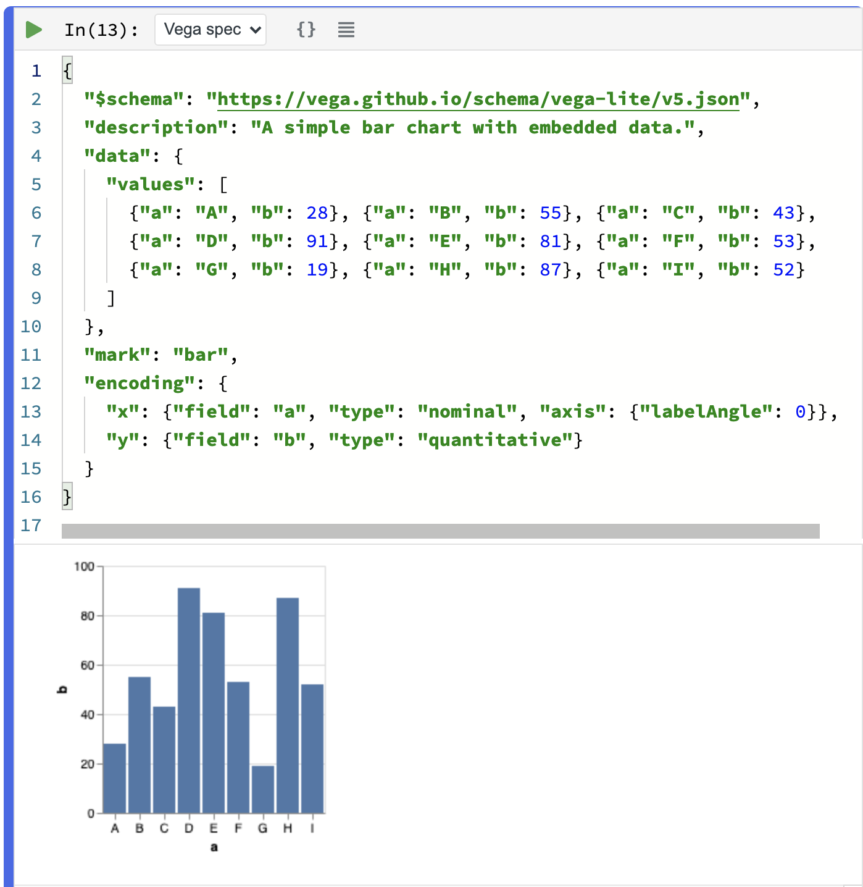
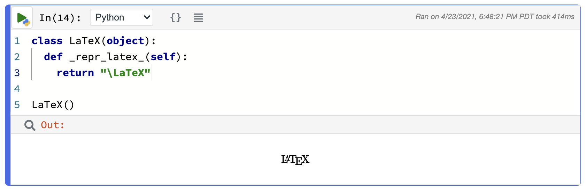

Visualization and Viz Cells
Polynote supports a number of different ways to visualize data.
Data Reprs¶
All symbols in a Polynote notebook have one or more Reprs, short for "Representations", that Polynote generates and then sends to the frontend.
They range from simple (such as the symbol's toString() value), to the complex (such as a streaming view into a Spark
DataFrame).
Reprs form the building blocks for all of Polynote's native data visualization. They can be viewed in a number of different ways. For example, as the result of a Code Cell, or in a Viz cell.
Let's take a look at a simple example: the Reprs generated for a String. We'll show them in both a Code Cell
result as well as a Viz Cell.

As the result of a Code Cell, the String is being stored in the Out symbol. Polynote generates two Reprs
for a String. First, all symbols get a StringRepr, which just corresponds to its toString() output.
Additionally, most symbols have some sort of representation of the symbol's type and value, such as a DataRepr in this
case, which carries the symbol's type as well as a serialized representation of symbol's entire value.
In this case, Out's DataRepr is seen both in the output of Cell 3, and in the "Data" tab of the Viz cell. In this
case, since Out is a simple String, its DataRepr displays its value in its entirety.
Clicking on the "Plain" tab of the Viz cell would display Out's StringRepr, which is, of course, simply "foo".
Repr display priority
When there are multiple Reprs available, Polynote tries to choose the richest available Repr as the default one
to display. In this case, the DataRepr is clearly richer than the StringRepr, which is why it's shown in the
Code cell output and displayed by default in the Viz cell.
Visualization Cell Types¶
While Code Cells do show some handy visualization of results, for plotting or as permanent fixtures of a notebook, it makes sense to break out the visualization of a specific value into its own cell.
Polynote provides native Vega support for plotting data. A Vega spec can be rendered using a Code Cell, by changing its language to "Vega spec". Additionally, Viz Cells provide a Plot Editor for supported data types.
We'll start by discussing Polynote's Vega support.
Vega Cells¶
Vega Cells are merely Code Cells with Vega spec set as the language.
As an example, here's the "Simple Bar Chart" example from the Vega-Lite Docs in Polynote.

Note that the data in this chart is stored under values in the data field of the spec itself. That's not terribly
useful: most of the time, you'll want to reference data defined in variables in your notebook.
Luckily, Polynote supports that! Let's rewrite the Vega example but this time we'll have it reference data defined in Scala.
First, we'll grab the data from the example and turn it into a Scala cell:
case class AB(a: String, b: Int)
val dataValues = Seq(
AB("A", 28),
AB("B", 55),
AB("C", 43),
AB("D", 91),
AB("E", 81),
AB("F", 53),
AB("G", 19),
AB("H", 87),
AB("I", 52)
)
Now, we can reference dataValues in our code.
{
"$schema": "https://vega.github.io/schema/vega-lite/v4.json",
"title": "dataValues",
"data": {
"name": "dataValues",
"values": dataValues.aggregate(["a"], [{"b":"mean"}])
},
"mark": {
"type": "bar",
"tooltip": {
"content": "data"
}
},
"encoding": {
"x": { "field": "a", "type": "nominal", "axis": {}},
"y": { "field": "mean(b)", "type": "quantitative", "axis": {}}
}
}
aggregate on the collection which
collects the values into a format that Vega can understand.
TODO: why "mean"?
Remembering the aggregation syntax can be tricky, which is why we recommend using the Plot Editor in a Viz Cell.
Viz Cells¶
Viz cells are a type of cell specifically geared towards, well, visualization. A Viz cell inspects the Reprs of a single symbol defined in the notebook, and provides ways to visualize it.
You can create a new Viz cell by clicking on a Code Cell inspection button (which
will create a new Viz cell inspecting the Out result of the cell), or through the
Quick Inspector (which will create a new Viz cell inspecting the current symbol).
Like other cells, a Viz cell can only inspect symbols that are in its scope, that is, defined in a cell above it.
We already saw a simple Viz cell above, so let's take a look at a more interesting example: the
dataValues shown earlier.
As a reminder, dataValues is a collection of type Seq[AB], where AB is
case class AB(a: String, b: Int).
This time, we'll start with the "Plain" tab of the Viz cell, which shows the StringRepr as mentioned above (you might
recognize this output as the result of calling toString() on a Scala List).

Notice that this Viz Cell has no "Data" tab. Instead, there are three tabs we haven't seen before: "Plot", "Schema", and "Browse".
These new tabs are actually all generated from the same Repr! Since dataValues is a collection, Polynote generates a
StreamingDataRepr for it, which is a special type of DataRepr specifically meant for collections.
More about StreamingDataRepr
Unlike DataRepr, StreamingDataRepr is a lazy representation of the data. This means that when a
StreamingDataRepr is sent to the frontend, the data stored in the value remains in the kernel and can be streamed
to the frontend in batches.
This is particularly useful when dealing with potentially huge datasets, like Spark DataFrames, which are
streams themselves.
Let's take a look at the three new tabs, which show different aspects of the StreamingDataRepr of dataValues.
Schema¶
The Schema view shows the types of the entries in the collection. In this case, the fields of AB are a
a: String and b: Int, shown below in a struct-like display.

Nested schemas can also be expanded, like nested data in a Code Cell's output.
Browse¶
The Browse view provides a tabular view of dataValues. As the data is streamed to the browser, you'll need to page
through it to see any values, as shown below.

The example data all fits in the first page, but larger data can be paged back and forth as needed.
Note that paging through the data may potentially start non-trivial computations in some cases (e.g., with a Spark
DataFrame)
Plot¶
The Plot view is the most complex part of a Viz Cell. It contains a Plot Editor which generates a Vega plot in a more straightforward manner, allowing customization of the plot type, selection of Dimensions and Measures to plot, and more without the need to edit Vega code directly.
The example below shows the Plot Editor being used to generate the example graph shown in the Vega Cell documentation above.

To extract the Vega spec generated by the editor, click on the  to
generate a Vega Cell that contains the generated spec.
to
generate a Vega Cell that contains the generated spec.
Other ways to visualize¶
If the Reprs that Polynote automatically generates aren't enough, there are plenty of other ways to hook into Polynote's display capabilities.
Defining your own Reprs¶
If you'd like to add display capabilities to types in your code, you can implement your own Reprs by extending the
ReprsOf
trait.
This allows you to register Reprs for your types. The easiest way to create a new Repr is to use a MIMERepr, which
takes a MIME type and content string. For example, you to display some HTML you could return
MIMERepr("text/html", "<h1>Heading</h1>"), or to show an image you could return
MIMERepr("image/png", "<a base64 encoding of a PNG>").
Here's an example adding a simple HTML MIMERepr for the results of type MyThing.
DOESN'T WORK!
import polynote.runtime._
case class MyThing(a: String)
object MyThing {
implicit object MyThingRepr extends ReprsOf[MyThing3]{
override def apply(value: MyThing): Array[ValueRepr] =
Array(MIMERepr("text/html", s"<strong>${value.a}</strong>"))
}
}
MyThing("hi")
Using kernel.display¶
Let's say you just want to display some output, but you don't want to go through the trouble of defining a special Repr.
You can use the kernel.display package (available in polynote.runtime) to hook into Polynote's display mechanism.
To display an HTML string, use kernel.display.html(content: String), which takes in a String and
outputs it as HTML.
You can also display other MIME types using kernel.display.content(mimeType: String, content: String), where
content is a String representation of the content (e.g., base64 encoded for an image). In fact,
kernel.display.html is actually a shortcut for kernel.display.content("text/html", _).
Visualization with Python¶
The Python ecosystem has a rich history of notebook usage with Jupyter/IPython, and many Python libraries define rich display representations for use in a notebook environment.
Polynote supports these _repr_*_() methods, too! Polynote simply translates these methods into their corresponding
MIMERepr.

Polynote supports all of the _repr_*_() standard methods, including _repr_mimebundle_(). This means that the
IPython.display API
also works in Polynote.

Additionally, Polynote understands pandas.DataFrames and generates StreamingDataReprs for them, just like
it does for Spark.

Finally, as shown in the tour, Polynote
supports matplotlib, too!